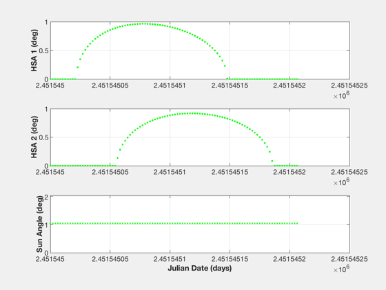

Contents
Generate HSA data for the function LoadAtt
Creates the file SpinAttData.txt in SAADData and tests it with LoadAtt. ------------------------------------------------------------------------ See also: HSAData, LoadAtt, RVFromKepler, SunV1, Unit, JD2000 ------------------------------------------------------------------------
%-------------------------------------------------------------------------- % Copyright (c) 2019 Princeton Satellite Systems, Inc. % All rights reserved. %-------------------------------------------------------------------------- % Since version 2020.1 %-------------------------------------------------------------------------- degToRad = pi/180; sunAngle = pi/3; dT = 0.1; spinRate = pi/30; n = 100; t = 180*(0:99); el = [24777.670 26.05*pi/180 0 pi 0.70215 1.16549572358275]; r = RVFromKepler( el, t ); rA = 87*pi/180; dec = -20*pi/180; us = SunV1(2450163.58333333 + t/86400); un = -Unit(r); eradius = (6378 + 40)./Mag(r); ua = [cos(rA)*cos(dec);sin(rA)*cos(dec);sin(dec)]; spinrate = 0.5236; cant1 = 85*degToRad; cant2 = 90*degToRad; dihedral1 = 315*degToRad; dihedral2 = 315*degToRad; quant = 0.0001; qtype = 'round'; jD0 = JD2000;
Generate the HSA data
[tLE1, ~, tW1] = HSAData( us, un, eradius, ua, spinrate, cant1,... dihedral1, quant, qtype, 0, 0 ); [tLE2, ~, tW2] = HSAData( us, un, eradius, ua, spinrate, cant2,... dihedral2, quant, qtype, 0, 0 ); t = jD0 + t/86400;
Print to the ASCII file
pData = FindDirectory('SAADData'); f = fopen(fullfile(pData,'SpinAttData.txt'),'wt'); for k = 1:n fprintf(f,'%12.4f %12.4f %12.4f %12.4f %12.4f %12.4f %12.4f\n',... t(k), tLE1(k), tW1(k), tLE2(k), tW2(k), spinRate, sunAngle ); end fclose(f);
Run LoadAtt which will plot the data
LoadAtt('SpinAttData.txt'); %--------------------------------------
Reading SpinAttData.txt